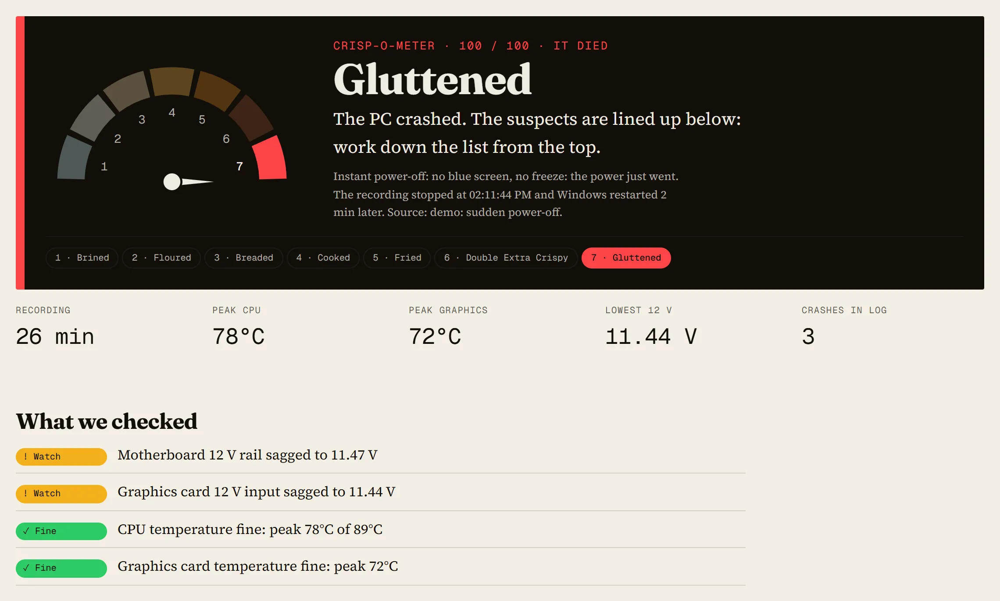
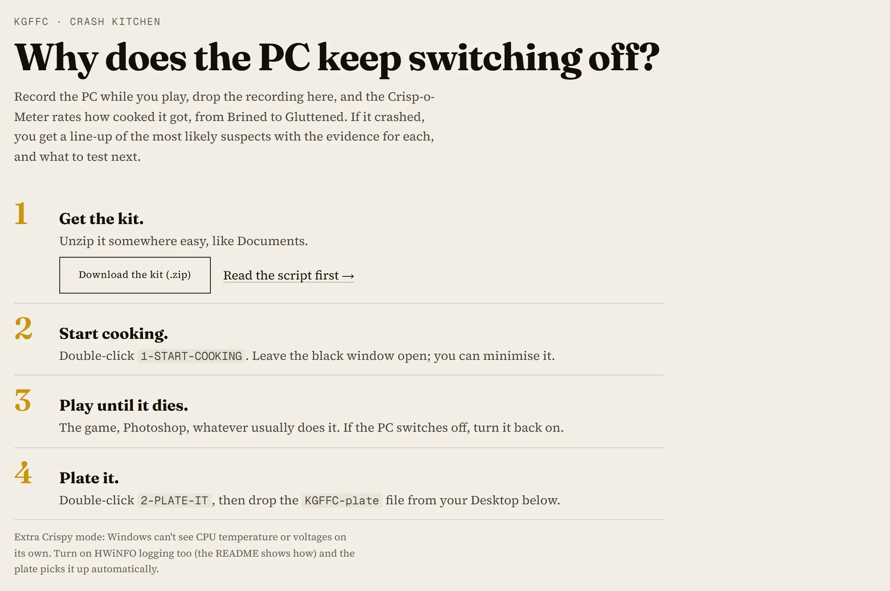
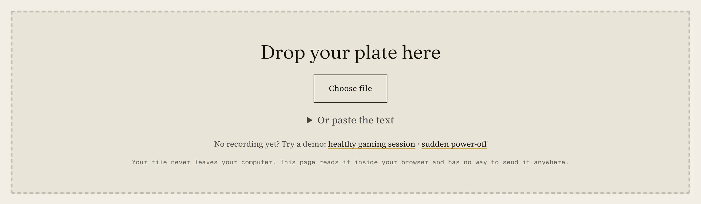
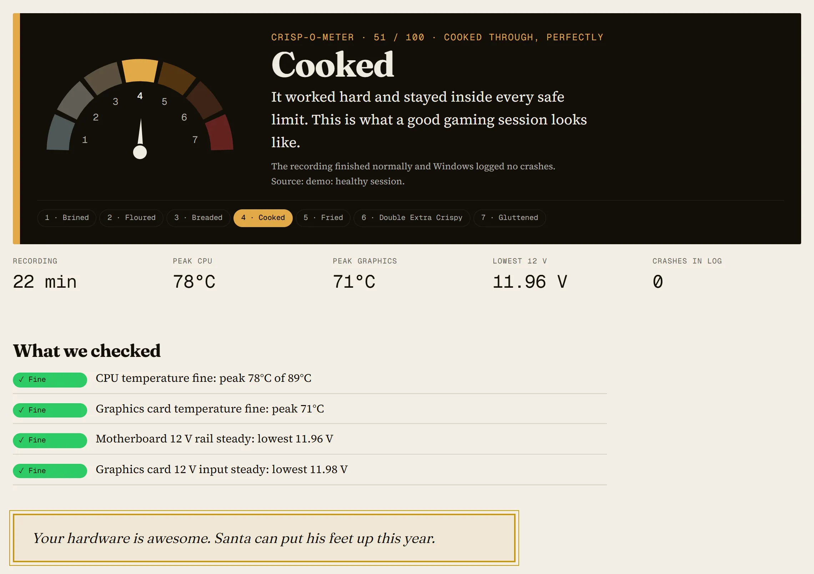
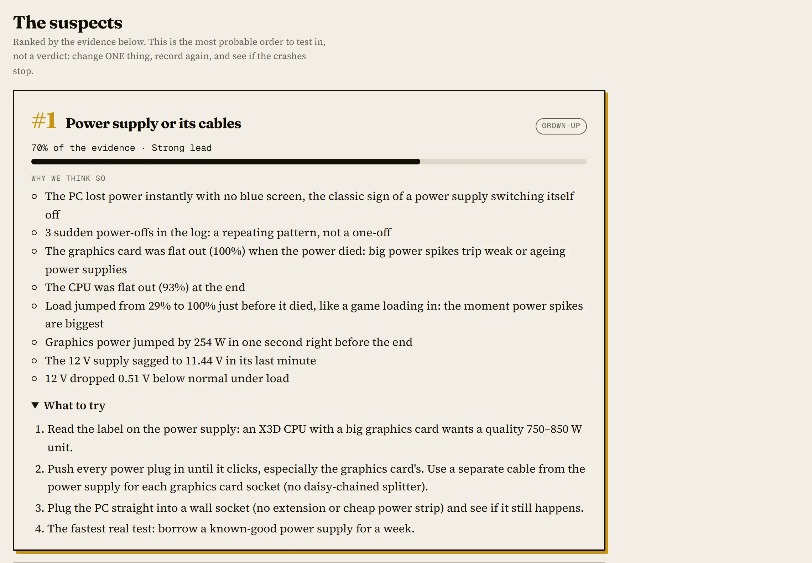
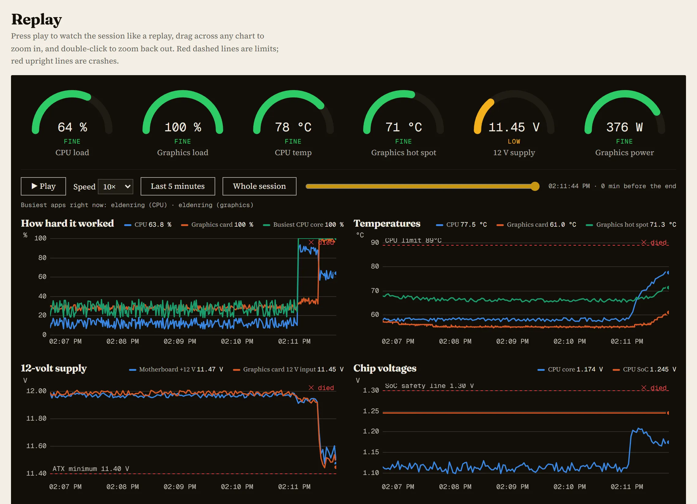
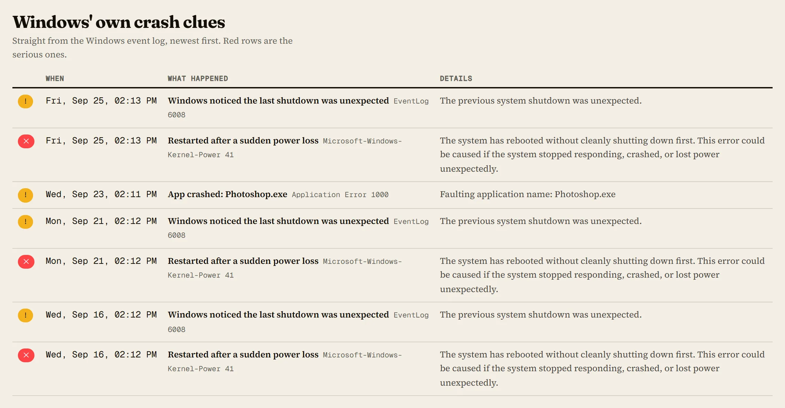
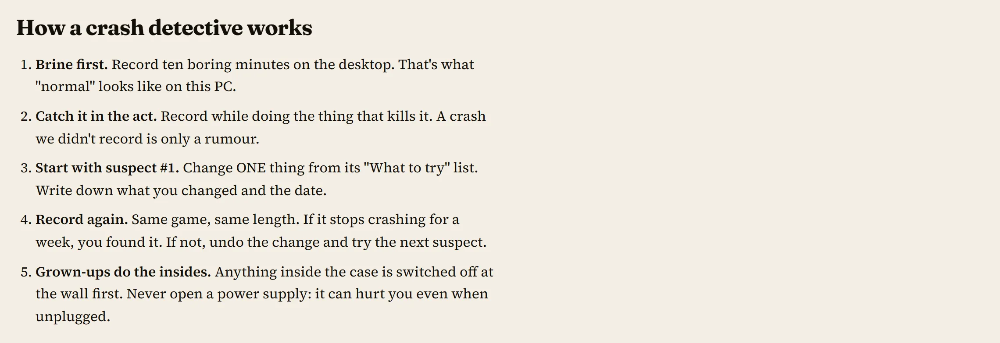

KGFFC · Crash Kitchen · FAQ
How the Crash Kitchen works
A PC in our house kept switching itself off. No blue screen, no warning: just dark, usually right as a game was loading, sometimes deep in Photoshop. The Crash Kitchen is how we catch it in the act. It is free, it installs nothing, and your file never leaves your computer.
Open the Crash Kitchen Try the crash demo →
Every screenshot on this page is the built-in demo, made-up data shaped like a real sudden power-off.
What is it?
Two double-click files that record what your PC is doing about once a second, and a web page that turns the recording into a verdict. The Crisp-o-Meter rates how hard and hot the PC ran. If it crashed, you get a line-up of the most likely suspects with the evidence for each one and what to try first.

How do I use it?
- Get the kit. Download the .zip from the Crash Kitchen and unzip it somewhere easy, like Documents.
- Start cooking. Double-click
1-START-COOKING. A black window opens: leave it open (minimising is fine). It forces every line onto the disk, so a sudden power cut loses a second at most. - Play until it dies. The game, Photoshop, whatever usually does it. If the PC switches off, turn it back on.
- Plate it. Double-click
2-PLATE-IT. It adds Windows' own crash records and puts oneKGFFC-platetext file on your Desktop. Drop that file on the page.


What do Brined … Gluttened mean?
- Brined Barely warm. Your hardware is awesome, or you didn't actually play anything.
- Floured Light work, cool temperatures.
- Breaded Real work at comfortable temperatures. A healthy PC.
- Cooked Worked hard and stayed inside every safe limit. What a good gaming session looks like.
- Fried Close to its limits. Nothing broke, but read the amber items.
- Double Extra Crispy Something went past a safe limit. Fix the red items before they turn into a crash.
- Gluttened It died: the PC crashed during the recording, or Windows logged a fatal hardware error.
The score adds up how hard the PC worked (CPU and graphics load), how close it got to its temperature limits (it knows each CPU's limit, like 89°C for a Ryzen 7 7800X3D), and every warning it found. A healthy PC never scores Gluttened, however hard you push it.

How does it pick the suspects?
Like a detective's points board. Each suspect (power supply, CPU overheating, graphics card, graphics driver, RAM and its EXPO/XMP speed, BIOS settings, motherboard, SSD, software) starts with points for the kind of crash. An instant power-off points at power; a freeze points at drivers and RAM; a blue screen's code points wherever that code usually points. Then the evidence adds points (the 12-volt supply sagged, the load jumped just before the end, the CPU hit its limit) and evidence against takes them away (the graphics card was cool, 72°C, in its last minute). Every point comes with its reason written out, so you can check our working.

Can it tell me exactly what's broken?
No, and it won't pretend to. A recording can show that the power supply's voltage sagged the moment a game loaded; it can't open the power supply. The suspect list is the most sensible order to test in. The test itself is yours: change one thing, record again, and see if the crashes stop.
What is the replay for?
Watching the last minutes like a game replay. Six gauges and up to ten charts share one time cursor: press Play, drag the slider, or hover any chart. Red dashed lines are limits (like the CPU's temperature limit or the 11.40 V minimum for a 12-volt supply); the red "died" line is the crash.

Where do the crash clues come from?
Windows' own event log, which 2-PLATE-IT copies for the last 14 days: sudden restarts, blue screens and their codes, hardware errors (WHEA), graphics driver resets, disk errors, and apps that crashed. The page translates each into plain English. The raw source and ID sit next to it, for the grown-ups.

What should I do next?

Anything inside the case is a grown-up job, switched off at the wall first. Never open a power supply: it can hurt you even when it's unplugged.
Is my file uploaded? What's in it?
Nothing is uploaded. The page reads your file inside your browser, and its security policy blocks it from sending anything anywhere. The file holds your hardware model names, driver versions, Windows crash events, the numbers we recorded, and which app was busiest each second (app names only). It never contains your user name, PC name, IP address, serial numbers or folder paths. Open it in Notepad and check before you share it with anyone.
Windows says "Windows protected your PC". Is it safe?
Windows says that about every script downloaded from the internet. Only run a kit you downloaded from kgffc.net/crash yourself, never one someone sent you. The kit is plain text: open kgffc-crash.ps1 in Notepad and read it first, or ask a grown-up to. Then choose "More info" and "Run anyway".
Why can't it see my CPU temperature?
Windows can't read CPU temperature or voltages by itself. The free program HWiNFO can (only download it from hwinfo.com). Turn on its logging, save the log next to the kit's .bat files as hwinfo.csv, and 2-PLATE-IT adds it automatically. We call it Extra Crispy mode. It's the best way to rule overheating and the power supply in or out. NVIDIA graphics cards report their own temperature and power without HWiNFO.
Does it need admin rights?
No. It installs nothing and runs as a normal user. The only thing Windows hides from normal users is the count of saved crash dumps, and the file says so instead of guessing.
What about Windows Performance Analyzer (WPA)?
The recipe file, kgffc-counters.txt, uses the same Windows performance counters as PerfMon and WPA, and the recording is a plain CSV. For a deep dive, record an ETW trace with wpr -start GeneralProfile -filemode and open it in WPA.
Something's wrong, or I have an idea
Please tell us. A suspect that turned out wrong is the most useful feedback there is. Send feedback →